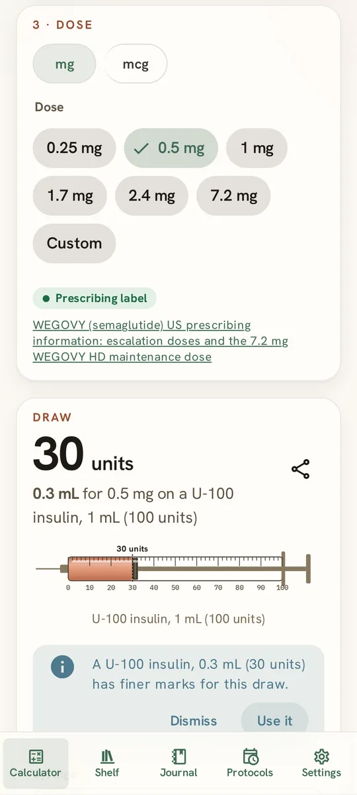
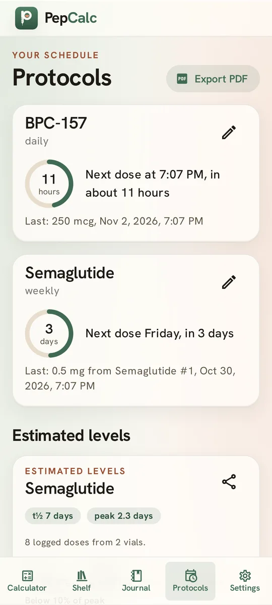
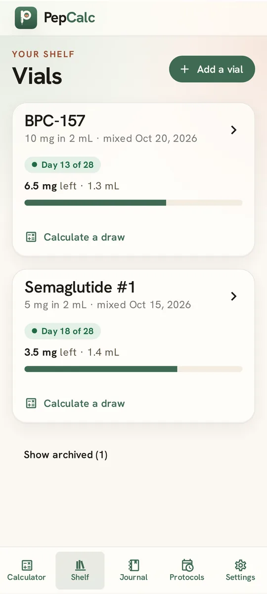
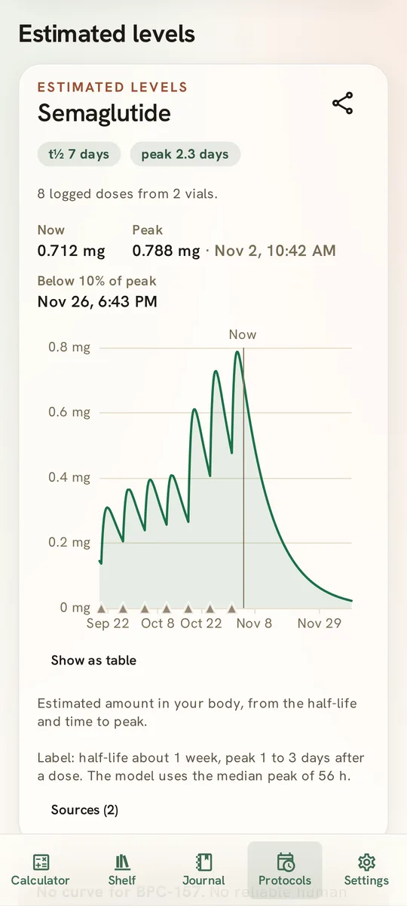
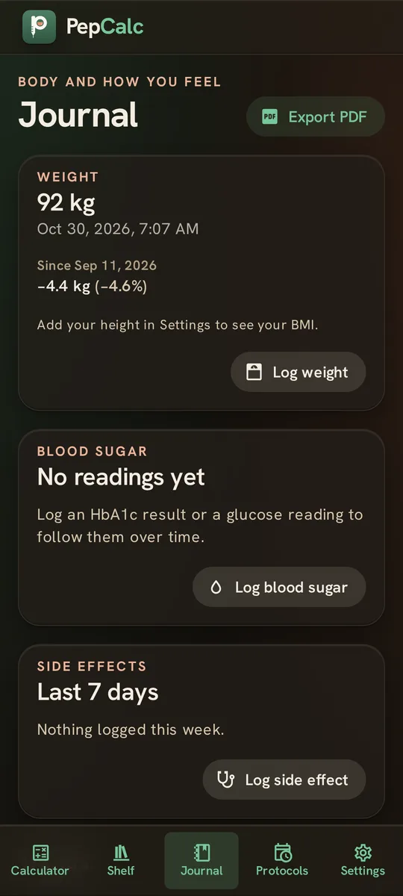
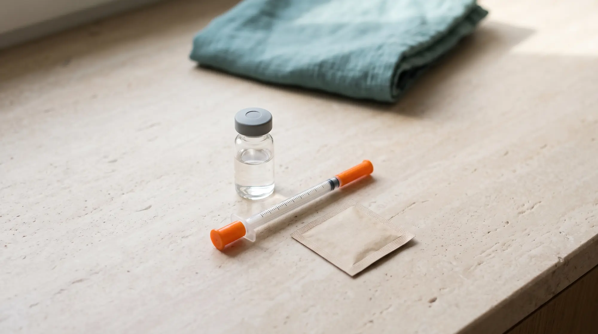

Draw calculator
Enter a dose. Read your syringe. Get a warning if a draw won't fit.

Calculate draws. Mix vials. Track every peptide. No paywalls. No subscriptions. Ever.
Works with U-100 and U-40 syringes, in mg, mcg, or IU.


Many apps charge for tracking. We don't.
PepCalc
Everything included
Total$0.00
Renews: never
Enter a dose. Read your syringe. Get a warning if a draw won't fit.

Ranks water volumes so every dose lands on a mark.
A countdown to every next dose. As many peptides as you like.

Your mixed vials, every draw, and what's left.

From published human data. Overlay up to four peptides, or enter your own half-life.

Weight, blood sugar, side effects, and private progress photos.

Vials, water, and doses. Each one sourced: label, trial, or community reports.
KLOW, GLOW, or your own mix. See what's in every dose.
Draws, levels, and journal entries in one PDF.
Phone calculators hide the math. PepCalc shows it.

Not our server. Not our cloud.
Your device holds the only copy. Back it up in Settings.
Semaglutide, tirzepatide, retatrutide, cagrilintide, tesamorelin, BPC-157, TB-500, GHK-Cu, KPV, and the GLOW and KLOW blends, or any peptide you add yourself.
Several of these peptides are investigational or not approved for human use.
Using a GLP-1 medicine from a pharmacy? Try Gliplog, a free, private journal for doses, weight, blood sugar, and side effects.
Open pepcalc.github.io/app on your phone or tablet, then add it to your Home Screen. It opens full screen and works offline.
| Phone or tablet | Steps |
|---|---|
| iPhone or iPad, Safari | Share, then Add to Home Screen |
| iPhone or iPad, Chrome | Share (in the address bar), then Add to Home Screen |
| Android, Chrome or Edge | Menu, then Install app (or Add to Home screen) |
| Android, Firefox | Menu, then Add app to Home screen |
An Android app for F-Droid is coming, built from the same open source code.
PepCalc doesn't recommend an amount. It shows the concentration and syringe units for each volume, and the mixing advisor ranks volumes for the doses you plan.
Divide the amount by the concentration to get millilitres, then multiply by 100 for a U-100 syringe (or by 40 for U-40). A 10 mg vial with 2 mL of water is 5 mg per mL, and 0.1 mL of it is 10 units on a U-100 syringe.
Yes. Add as many vials and protocols as you like, for free. The level chart overlays up to four peptides at once.
Yes. Forever. No paywall, no upsell, no subscription, no ads. With no server, it costs almost nothing to run.
On your device: in your browser's storage, or inside the Android app. Nothing is sent anywhere. Clearing this site's data or uninstalling the app deletes it. Keep a backup.
It moved to pepcalc.github.io/app, on the same site, so your vials, draws, and journal are still there. A Home Screen icon you added before the move keeps working: it opens this page, and Open app takes you to your data. On iPhone and iPad, a new icon starts empty, so if you add one, save a backup in the old icon first and restore it in the new one.
Save a backup in Settings, move the file to the new phone, and restore it there. On iPhone, Safari and the home-screen app keep separate data. Use a backup to move between them.
No. It does the arithmetic and shows reference values with their sources.